A bank account with health built in
A mobile banking app for a CBN-licensed, healthcare-focused microfinance bank. Transfers, savings, cards and bills sit alongside HMO cover, a health wallet, a dietitian and rewards for healthy habits.
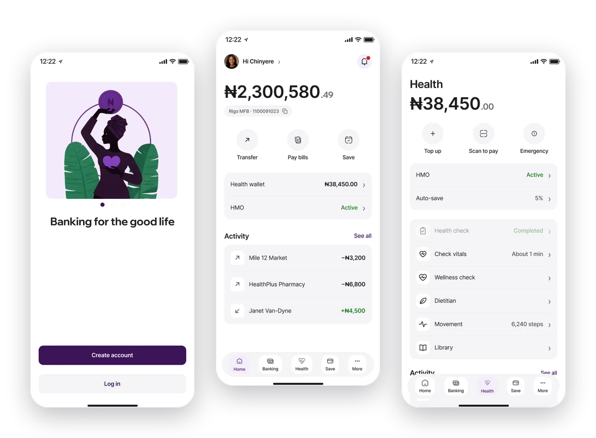

From the PRD to what ships
I design from the product team’s PRDs. A requirement like “add device verification” doesn’t say what happens on a second device, a failed OTP or a lost SIM, so my job is to find and design those cases. Then I check the built app against the designs before each release.
Health data that helps without diagnosing
I proposed a firm rule, and the team adopted it into the PRD: the app collects health data but never shows a health score. The PRD added that it must never name a condition it suspects, and BMI is calculated behind the scenes only. A bank isn’t a doctor, and a wrong label on someone’s phone does real harm.
So I designed the health profile around what the app can do: notice, explain, and route people to a professional.
- Low effort. Short sections, completed in any order, each under a minute.
- A high reading leads to action. An elevated blood pressure says it’s above the typical range and that one reading can be off, then offers a telemedicine consult, a partner clinic, or a reminder to re-check.
- Guidance, labelled as guidance. Plain next steps for eating and movement, plus a consult the user’s HMO already covers.
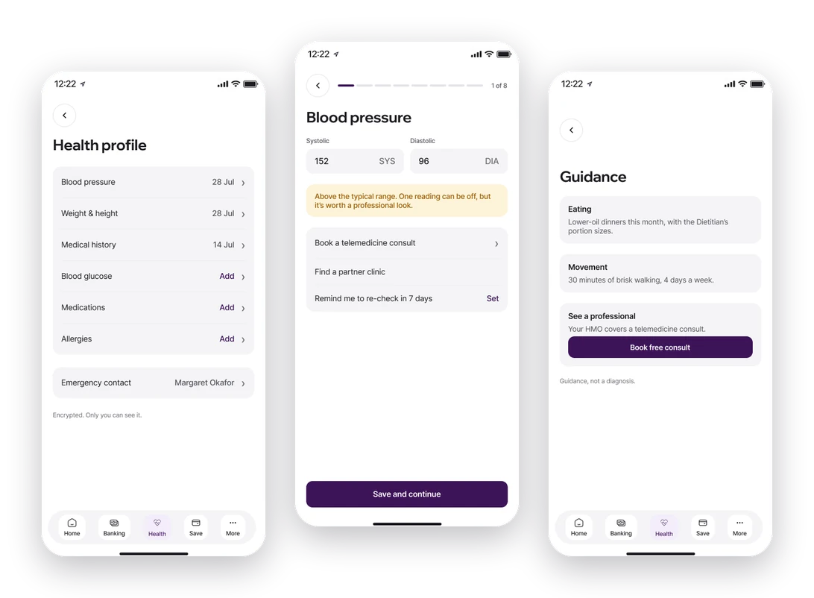
Vitals from a selfie, without playing doctor
Management asked for a camera scan that estimates heart rate, breathing, heart rhythm variation, stress, blood pressure and oxygen in about a minute. The no-diagnosis rule had to hold here too.
- Every number is an estimate, and the results say so at the top and bottom.
- Compared to you, not a score. A reading is shown against the user’s own usual, so “higher than usual” means something.
- One calm next step. A high reading asks for a re-scan after rest, offers a doctor and the user’s health cover, and keeps a red line for emergencies.
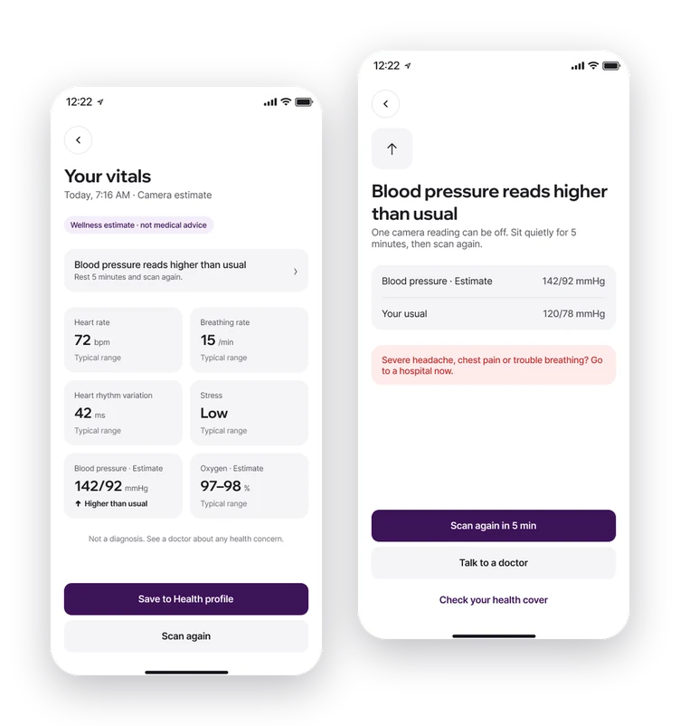
Security the regulator signs off and users don’t hate
CBN rules require device verification and strong authentication. Each requirement adds a step a user can get stuck on, so I designed each one to be quick and to explain itself.
- New device, clear choice. An unrecognised sign-in shows the device, location, time and IP address, with two options: “This wasn’t me” or “It was me”.
- Biometrics at the right moment. Face ID or fingerprint is offered after the first login, not crammed into sign-up.
- Step up, don’t lock out. A new-device session works normally until the first sensitive action, which asks for extra verification there and then.
- SIM-swap guards on PIN recovery, because a hijacked phone number shouldn’t be enough to take over an account.
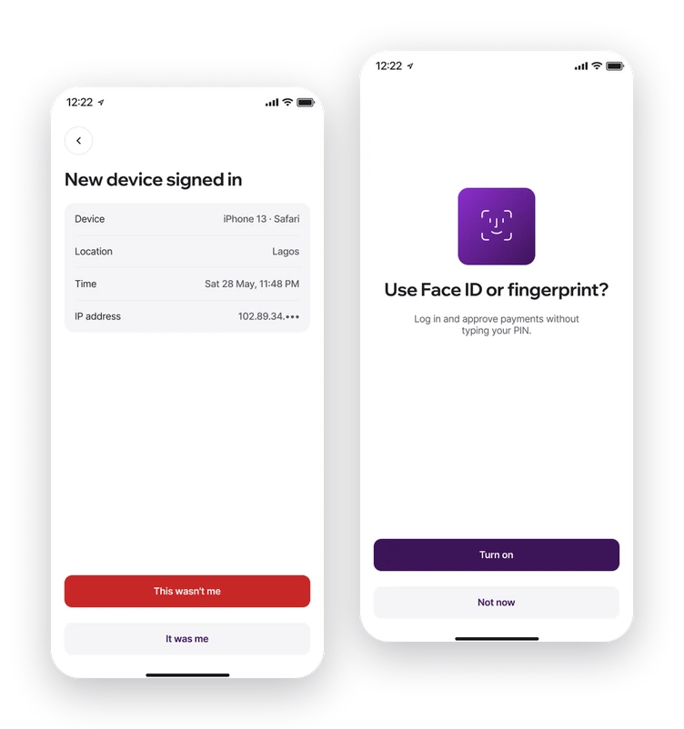
Cut until only the task is left
The third version set one rule for every screen: as plain as Apple Notes. Taglines, helper text and secondary labels came out. Where a screen needed them to make sense, I fixed the layout instead.
- Five tabs: Home, Banking, Health, Save and More. The health wallet and HMO sit on Home, next to the balance.
- Two typefaces, two jobs. Inter for everything you read and tap, Wix Madefor Display for titles and balances.
- Proven flows kept. Transfers and bill payments kept their earlier designs, which already worked.
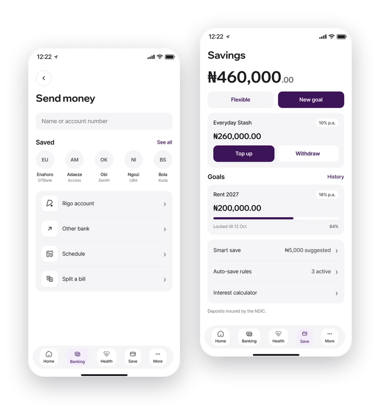
A system that holds across 600+ screens
I built light and dark design systems as Tokens Studio tokens, so colour, type and spacing reach engineering as data rather than redlines. That cut design-to-development time by about 25%. Every screen has a dark version.
Before releases I run a live app vs. Figma audit: screenshots of the build next to the designs, each difference tagged by severity, so engineering fixes what matters first.
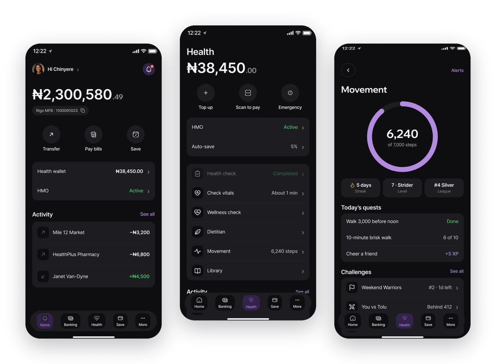
Movement: step challenges, built in-house
Leadership wanted a community feature like Pacer: daily steps, challenges with friends and leaderboards. Pacer has no SDK we could embed, so we designed and built it ourselves, in two phases so the riskier social features could follow a solid private one.
Phase 1 is just you: today’s steps, a goal based on your own last 14 days, and self-challenges. The bank-specific idea is step-to-save: hit your daily goal and the app moves an amount you choose into a savings goal.
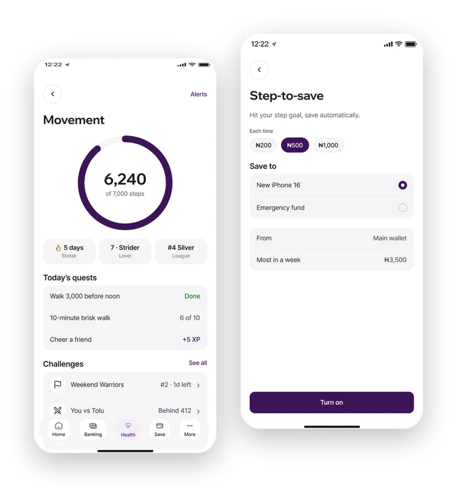
Phase 2 adds other people, opt-in and with a display name the user chooses. Challenges are live races with a leaderboard, the gap to the person ahead and a one-tap cheer. Weekly leagues have promotion and demotion zones, so there’s always someone just ahead to catch.
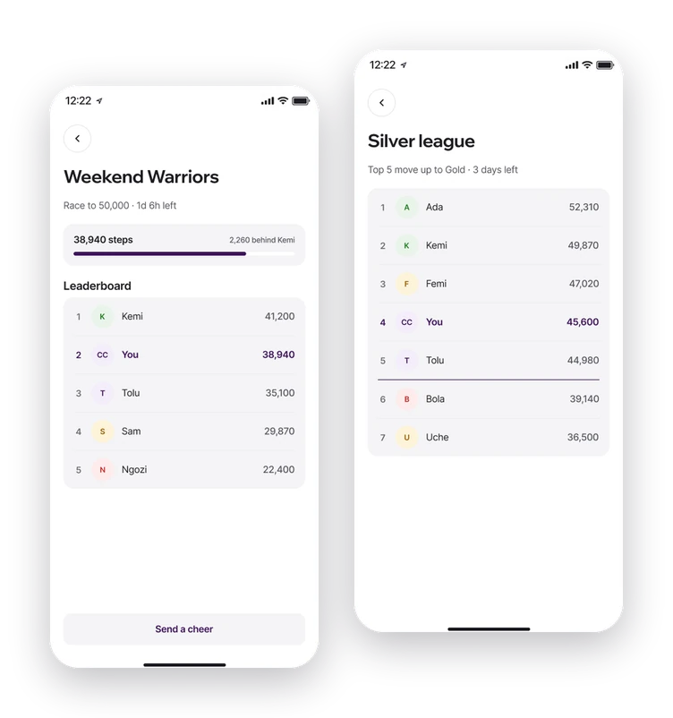
Let friends join before they download
Challenges spread through invite links, but most people who get one don’t have the Rigo app. Asking them to install a banking app and complete KYC before they can take a walk would end most invites right there. I proposed a web version anyone with the link can join, and built it as a working prototype.
- Join with a phone number. No bank account needed.
- Log steps by hand, copied from Google Fit, Samsung Health or Apple Health.
- A fair reason to get the app. Only app-verified steps can win the points pot. Web walkers still race and earn pending points, and the app is how they claim them.
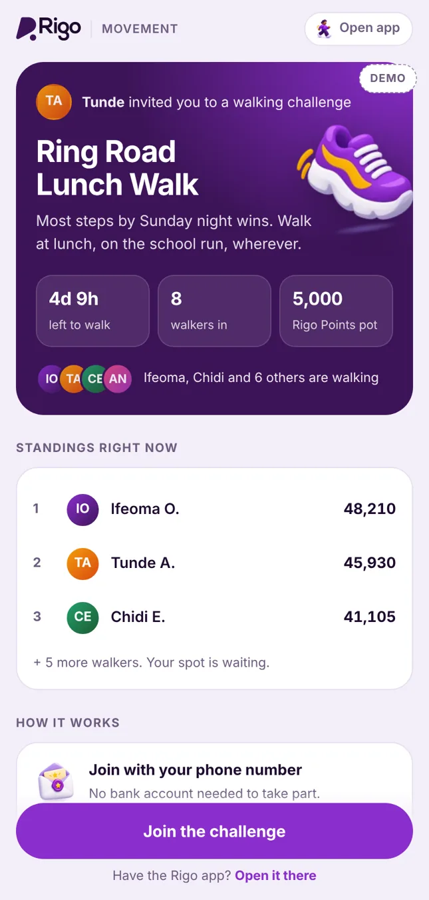
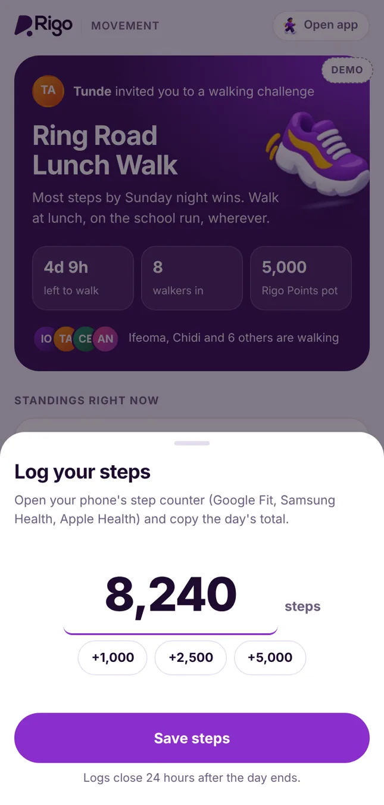
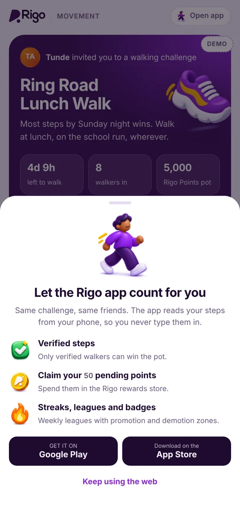
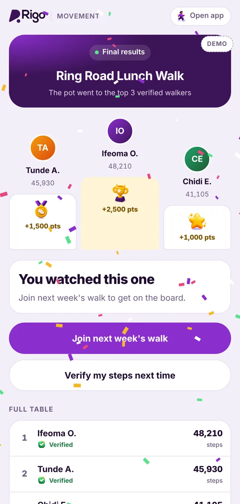
Designed, not yet built
Everything here is designed and waiting to be built: 600+ hi-fi screens in light and dark, across onboarding, transfers, savings, cards, KYC, HMO, vitals and support, plus the health profile, security flows and both Movement phases. The Movement web version already runs as a working prototype.